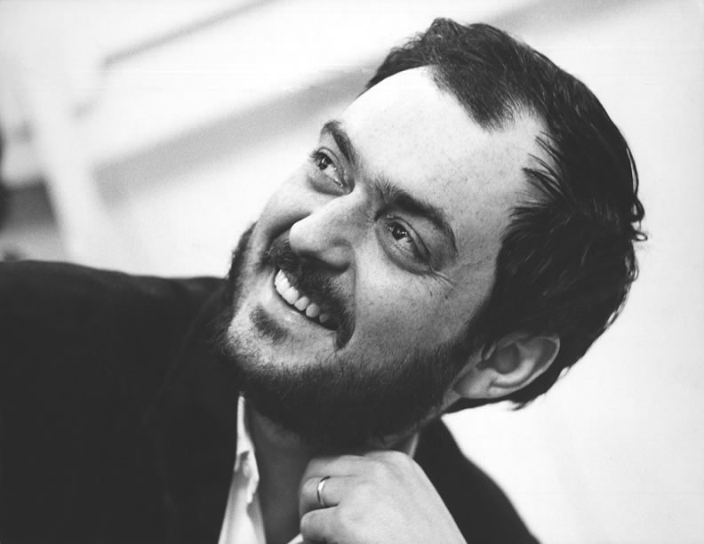

Stanley Kubrick
Biografía
Nació el 26 de julio de 1928 en el Bronx, Nueva York en el seno de una familia de origen judío.
Kubrick tuvo su primera cámara a los trece años, obsequio de su padre, un médico y que le hizo conocer los principios fundamentales de la fotografía. Aficionado a la música, especialmente al jazz, fue batería en la Taft Swing Band.
Comenzó a trabajar como reportero en la revista Look convirtiéndose en uno de los fotógrafos más prestigiosos del país. En 1950 abandonó la fotografía y realiza su primer cortometraje, que reflejaba un día en la vida de un boxeador (Walter Cartier), Days of fight (Días de lucha, 1950), un documental de quince minutos que le compró la RKO Pathé. Gracias a ello Stanley Kubrick consiguió el respaldo de esta compañía para hacer el documental Flying Padre (1951).
El que se convertiría en uno de los cineastas más perfeccionistas y difíciles de la historia. Rodó su primer largo con dinero prestado, Miedo y deseo (1953), en el que el fue el encargado del guión, la dirección, la cámara y el montaje. Kubrick obtuvo un fracaso comercial pero buena acogida de la crítica. Sus dos siguientes películas, El beso del asesino (1955) y Atraco perfecto (1956), tuvieron idéntica aceptación y pese a su fracaso de público, le valieron un contrato con la United Artists.
Fue un director increíblemente meticuloso en todas sus obras, en las que invertía un promedio de dos años de arduo trabajo. En 1959, el alegato antibélico Senderos de gloria (1957), protagonizado por Kirk Douglas, consiguió el gran premio de la crítica en Bruselas. Durante el rodaje conoció a Christiane, con la que se casó y de la que no se separó hasta su muerte. En 1960 Espartaco, con un presupuesto de 12 millones de dólares y un reparto estelar, obtuvo un éxito arrasador, al que siguieron Lolita (1962), basada en la novela de Vladimir Nabokov; Teléfono rojo: volamos hacia Moscú (1964); 2001, una odisea del espacio (1968), un hito del cine de ciencia ficción; la futurista y violenta La naranja mecánica (1971), a partir de la novela de Anthony Burgess; Barry Lindon (1975); El resplandor (1980), según el relato de Stephen King; y La chaqueta metálica (1987), sobre la guerra de Vietnam.
Stanley Kubrick controlaba todo el proceso de producción de sus trabajos, supervisa el doblaje de sus películas a otros idiomas, y salvo ocasiones excepcionales, nunca permitió que se proyecten por televisión. Además, al abordar cualquier tipo de género, dota a sus películas de una fuerza creativa que lo libera de la dependencia de los grandes estudios. Fue candidato al Oscar en varias ocasiones y lo recibió en 1968 por los mejores efectos visuales en su película 2001: Una odisea del espacio.
Stanley Kubrick falleció el 7 de marzo de 1999 en Harpenden, Hertfordshire, Inglaterra, de un ataque al corazón cuando daba los últimos toques a Eyes wide shut, su último trabajo, en el que participaron Nicole Kidman y Tom Cruise.